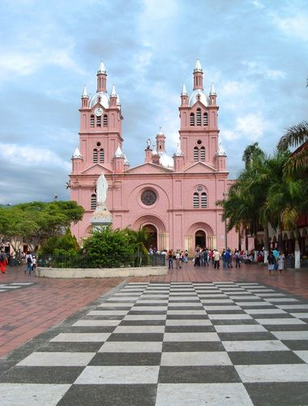
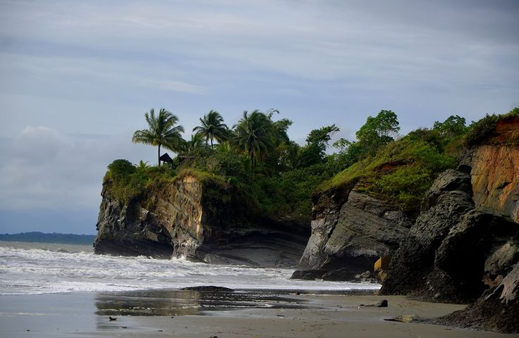
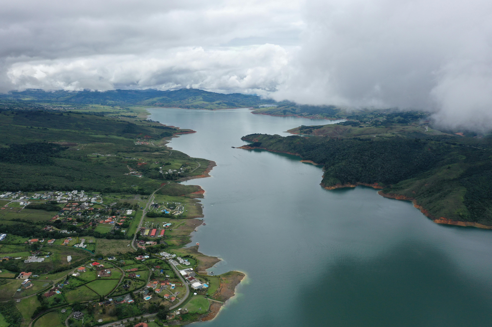

Descubre el encanto del Valle del Cauca
El Valle del Cauca es una región que combina historia, naturaleza y modernidad. Su diversidad geográfica abarca desde las montañas de los Andes hasta las playas del Pacífico, ofreciendo una experiencia única para todos los viajeros.
En A&G TOURS te ofrecemos transporte turístico y empresarial en todo el departamento, conectando destinos como Cali, Buga, Buenaventura, el Lago Calima y los Farallones, con un servicio seguro, confiable y de alta calidad.
Además, el Valle del Cauca es escenario de grandes celebraciones como la Feria de Cali, una de las fiestas más reconocidas de Colombia. Cada diciembre, la capital se llena de música, baile y alegría con el famoso Salsódromo, conciertos, desfiles y eventos que muestran al mundo la pasión y el talento de su gente.
Vive con nosotros la esencia del Valle: su cultura vibrante, su gente alegre y su impresionante riqueza natural, con experiencias diseñadas para que disfrutes cada momento del viaje.
Feria de Cali
La Feria de Cali, celebrada cada diciembre, es el evento más representativo del Valle del Cauca. Durante seis días, la ciudad vibra con desfiles, conciertos, muestras gastronómicas y el espectacular Salsódromo. Es una fiesta que exalta el arte, la alegría y la identidad caleña, atrayendo a miles de visitantes de todo el mundo.


Cali, capital cultural del Valle
Cali es una ciudad que combina ritmo, historia y modernidad. Conocida mundialmente por su talento musical y su amor por la salsa, también ofrece una rica oferta cultural con museos, iglesias coloniales y miradores icónicos como Las Tres Cruces y el Cristo Rey. Su gente cálida y su ambiente festivo la convierten en el corazón cultural del suroccidente colombiano.
Basílica del Señor de los Milagros – Buga
La Basílica de Buga es un símbolo de fe y tradición religiosa. Su imponente arquitectura neogótica y la devoción al Señor de los Milagros atraen a peregrinos de toda Latinoamérica. Además, la ciudad ofrece una atmósfera tranquila, ideal para disfrutar de su historia, gastronomía y calidez humana.
Parque Nacional Natural Farallones de Cali
Los Farallones de Cali son una joya natural del Valle. Este parque ofrece imponentes paisajes, cascadas y una biodiversidad única. Es un destino ideal para el senderismo, la observación de aves y el ecoturismo, rodeado de niebla y montañas que parecen tocar el cielo.
Playas de Juanchaco y Ladrilleros
En el litoral Pacífico, cerca de Buenaventura, se encuentran las playas de Juanchaco y Ladrilleros, reconocidas por su belleza exótica y su entorno natural. Entre julio y octubre es posible avistar ballenas jorobadas, una experiencia inolvidable que combina aventura, naturaleza y emoción frente al mar.
Hacienda El Paraíso
La Hacienda El Paraíso, ubicada en el corregimiento de El Cerrito, es un ícono cultural y literario. Fue el escenario de la famosa novela María de Jorge Isaacs, y hoy conserva su arquitectura colonial, jardines románticos y un museo que revive el romanticismo del siglo XIX en el Valle del Cauca.
Lago Calima
El Lago Calima es uno de los principales destinos de turismo de aventura del departamento. Con sus fuertes vientos y paisaje montañoso, es ideal para practicar windsurf, kitesurf y vela. Además, ofrece zonas para acampar, alojamientos rurales y una experiencia perfecta para disfrutar la naturaleza en familia.
Museo La Tertulia
El Museo La Tertulia es uno de los principales centros culturales del suroccidente colombiano. Con una amplia colección de arte moderno y contemporáneo, este espacio ofrece exposiciones, talleres, proyecciones y actividades educativas que promueven el arte y la creatividad en el corazón de Cali.
¡Contáctanos y planifica tu viaje con A&G TOURS!